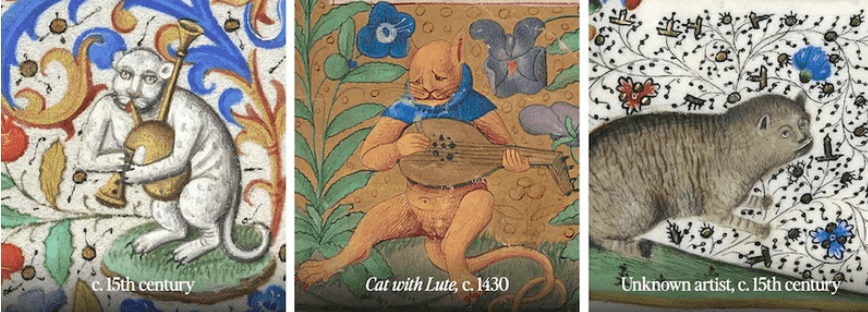
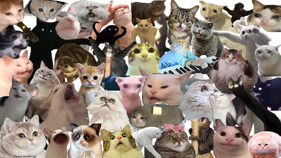

"To artists during the medieval era, animals were seen as a reflection of society, and cats were a prime example of deviant behavior. Much of the animosity toward cats revolved around the dark forces. Their ability to see in the dark worried people during that time, as this kind of “night vision” was chalked up to animals dismissing Christ’s light and choosing to walk amongst the darkness of the devil.Those derpy faces are intended to symbolize the deviance of a domestic cat’s behavior. Their sometimes deformed faces and beady eyes were used to draw distinctions between heresy and religious faith and strengthen arguments that cats were a portrayal of dark, devilish magic." - ART RKL ARTRKL "Medieval Cat Paintings"
"Research has suggested that viewing online cat media is related to positive emotions, and that it even may work as a form of digital therapy or stress relief for some users. Some elements of research also shows that feelings of guilt when postponing tasks can be reduced by viewing cat content." Wikepedia "Cats and the Internet"
"Memes have transcended their origins as simple internet jokes, evolving into powerful tools for communication, cultural reflection, and even political influence. In todays digital landscape, memes have become an integral part of our online experience. They can shape public opinion, foster connections, and even influence marketing strategies." Pictory "Memes as Communication"
Really, memes have been around since humans started communicating with each other. They are a way for people to spread ideas with each other, most commonly through imagery. From goofy paintings of cats from long ago to modern day internet fads, cats have been at the forefront of human communication. - Elizabeth Salinas